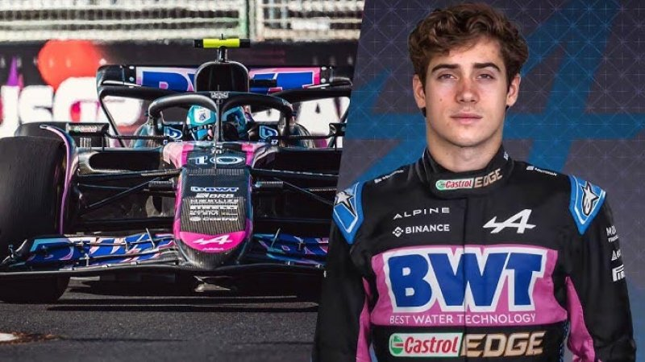

El automovilismo argentino está de fiesta: Franco Colapinto, con tan solo 21 años, logró debutar oficialmente en la Fórmula 1 en la temporada 2024. Luego de un destacado paso por la Fórmula 2, el piloto oriundo de Pilar cumplió su sueño de llegar a la máxima categoría. Para la temporada 2025 logró llegar a un acuerdo de contrato con Alpine para ser piloto de reserva y posteriormente piloto titular junto a su compañero Pierre Gasly.
Colapinto comenzó a destacarse desde joven en Europa, pasando por categorías como la Euroformula, la Fórmula Renault y la F3, donde siempre demostró talento y constancia. En 2024 fue uno de los protagonistas en la F2, consiguiendo victorias claves que le abrieron la puerta a la máxima categoría del automovilismo.
Gracias a su vínculo con la Academia Alpine y al apoyo de distintas entidades argentinas, Franco se convirtió en piloto oficial de la escudería francesa. Su primer GP fue en el circuito de Imola en Italia, que fue el séptimo del calendario.
Colapinto representa una nueva ilusión para los fanáticos del país. Con una combinación de talento, madurez y hambre de gloria, muchos ya lo ven como el futuro referente del motorsport argentino a nivel global.